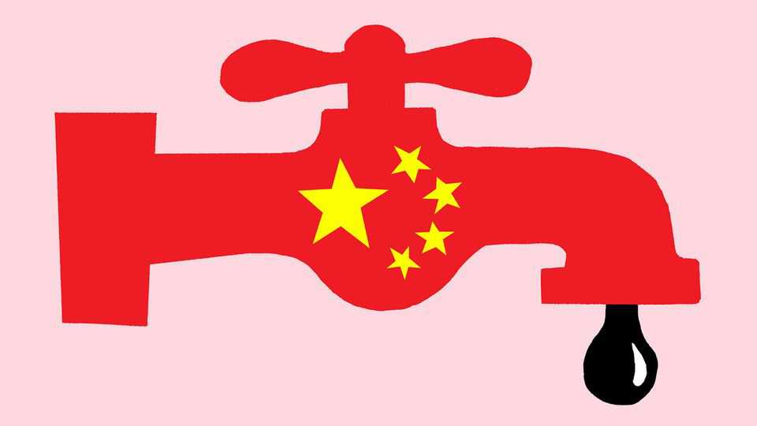

China has wrested control of oil markets from OPEC
When market power comes from buying power, oil importers can do better

Aug 13th 2026
THE GREAT economic surprise of the Iran war has been that oil prices have stayed relatively contained even with the Strait of Hormuz mostly shut. Five months into the war Brent crude remains about $40 below the $126 per barrel intraday high it hit on April 30th; for a while there was even a “mini-glut” of crude oil. As a result motorists and oil importers have not yet faced a severe crunch. And—though it may seem difficult to believe—Iran has had less leverage over President Donald Trump than it might have done. For the reprieve, the world can thank China.
When Iran started pointing its drones and missiles at tankers crossing the strait, 14m barrels per day (b/d) of crude oil—roughly one-fifth of world output—risked being trapped in the Gulf. Saudi Arabia and the United Arab Emirates (UAE) soon redirected about 5m b/d via pipelines. Strategic-stock releases by rich countries, including America and Japan, covered another chunk. But the biggest shock absorber has been a near-halving of China’s crude-oil imports, to 5.5m b/d. Curtailing China’s imports has been a feat of state engineering, achieved by releasing stocks, restricting exports and managing demand.
It is worrying when China’s autocratic rulers have such a firm grip on any market. They often use their leverage in the global economy—from being the biggest importer of barley to refining more rare-earth elements than anyone else—to bully critics and impose costs on countries that irk them. The Iran war, though, has shown that oil consumers can benefit when big buyers exercise their market power.
For decades the king of the oil markets has been the Organisation of the Petroleum Exporting Countries (OPEC). Together with its allies, which include Russia, the cartel controlled around half of global crude production before the war. opec usually aims to keep prices artificially high by agreeing restrictive quotas on production, often co-ordinating output cuts (though occasionally it has done the reverse, allowing Saudi Arabia to flood the market to try to kill off rivals, notably American shale). The cartel’s manipulation of the market is like a tax on the global economy. Estimates of the economic damage it causes range from fairly modest to a hefty $5.7trn between 1970 and 2014 (or 0.15% of global GDP each year).
China’s oil strategy, by contrast, has proved helpful this year. Its accumulation of vast stocks when prices were low will have imposed a small cost on the global economy at the time. But dampening price spikes is correspondingly beneficial. If China ends up smoothing peaks and troughs in prices, it could make investments in new sources of supply easier to plan. Trying to buy low and sell high can go wrong, as any speculator knows. Thankfully it is China that bears that risk, and the costs of storage.
The balance of power in oil markets may shift again. For a while, once the Gulf crisis abates, there could be a “superglut” of crude, which was originally forecast for 2026. OPEC will also be weaker than it was before the war. The UAE, once its third-largest producer, quit the cartel in May, and other members are itching to pump more.
Yet over time the supply of oil may contract faster than demand, and China’s role in influencing the latter could shrink. Every two years, as oilfields deplete, the world loses one Saudi Arabia’s worth of crude supply. At a global level, investment is inadequate to replace those barrels beyond 2030. This could tilt the balance of power back to the cartel, because the Gulf’s state-owned giants are among the few still investing in ambitious new projects. Its share of supply will rise. At the same time China’s demand could fall, owing to the advancing electrification of its economy. It might judge that it needs fewer reserves. If so it will buy less during gluts and cut imports by fewer barrels during a crisis, meaning it no longer absorbs as much of an oil-price shock.
China has shielded oil markets from the effects of the Iran war out of pure self-interest. Its export controls have left diesel, petrol and kerosene in much shorter supply than they would usually be at today’s crude-oil price. It also keeps information about its stocks scarce, so America and others do not know how long it could withstand sanctions or war. That makes the oil market harder to anticipate.
But the consequences of its interventions have bought other oil importers time. They should use it to diversify their sources of supply and reduce their oil consumption. The simplest way for them to avoid dependency on any autocratic regime is to have less need for the black stuff in the first place. ■